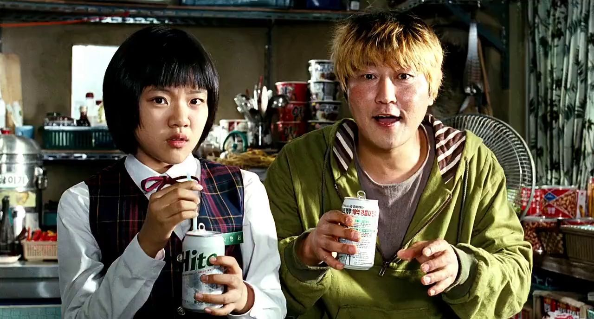
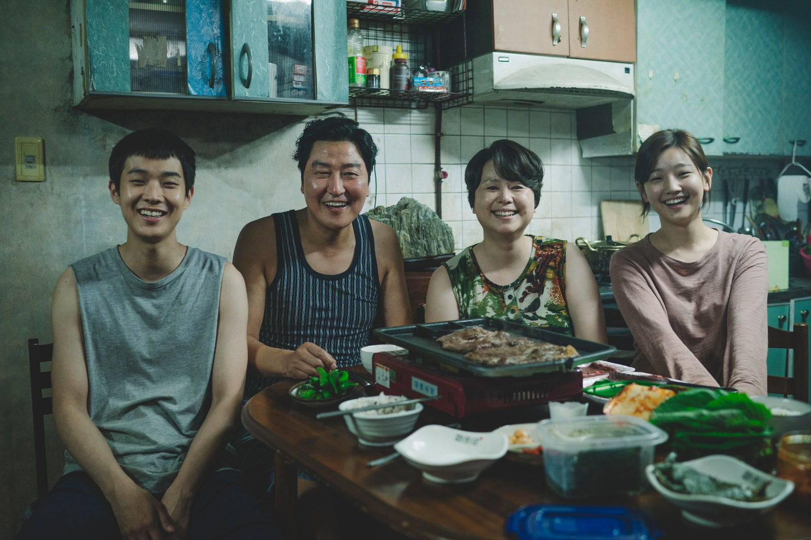

GQ: Parasite is similar thematically to Snowpiercer and Okja, but you made both those movies in English. Why was it important to you to make this one in Korean?
Bong Joon-Ho: It just happened very naturally. Because I'm based in Seoul, I wanted to tell the story about people around me in neighborhoods that I encounter on a daily basis. That’s where the thought began. I wanted to sort of delve deeper into the reality that surrounds me, as if I'm looking at it through a microscope—something smaller but also deeper.
Rather than me coming back to Korea, it was more important that I come back to films of this size—like Mother and Memories of Murder—because Okja and Snowpiercer were relatively bigger budget films.
At what point in your life did you feel like you became class conscious? And when did you realize you wanted to start incorporating those themes into your work?
Bong Joon-Ho:I think all creators, all artists, and even just everyone, we are always interested in class, 24/7. I think it would actually be strange if we're not. You know, when we're seeing people on the subway, on the streets, complete strangers, we wonder, how rich are they? Or you know, people we encounter in the airports, did they ride economy class, business class? We always wonder about this, because we live in the era of capitalism. I think we all have a very sensitive antennae to class, in general.
There was Us by Jordan Peele, Shoplifters by Hirokazu [Kore-eda], Burning by Lee Chang-dong, which all talk about class. These films sort of exploded out in the past couple of years. It's not as if we all gathered together for a big meeting on how we should talk about class, it just happened very naturally.
There are so many different ways for wealthy people to signal that they have money. How did you settle on the aesthetics for this particular family?
Bong Joon-Ho:This family, they want to show that “We do have money, but we're also sophisticated. We're not ostentatious, we're not cheesy about it." That’s why they're living in this house designed by a famous architect. They want to be like, "I know art. I have artistic taste." They want to confirm it every moment, that they're not like cheap rich people. But what they really want, and this is something Mr. Park says in the film, is they [draw] a line over their sophisticated world and they don't let anyone cross it. They're not interested in the outside world, the subway and people who might perhaps smell. They want to push everyone outside of that line and they want to remain safe behind it.
Smell is a pivotal force in the film. I know it’s the most evocative sense, but are there any other reasons why you wanted to use it to push the narrative forward?
Bong Joon-Ho:The jobs that these characters take—tutoring, housekeeping, and driving—feature a rare moment where the rich and poor are together in a very private space and so close to one another that they can smell each other. It was kind of the perfect device in the story.
In The Host, you had a character who was a nationally ranked archer, and in this one, the mom is a former champion shot put player. What interests you about those athletes’ stories, especially those coming from working class backgrounds?
Bong Joon-Ho:In The Host, she won the bronze, and the mom in Parasite, she won the silver medal that's hanging on the walls. I put in that setup to give the sense that if the husband and the mom fight, he might actually be the one getting hit by her. The father, he is the head of the household, but socially, economically, he's pretty incompetent. He's a loser, but physically, he's also weaker. I wanted to give that sense of just overall incompetence with this character.


(left image) Host by Bong Joon Oh (right image) Parasite by Bong Joon Oh
What do you think makes the rich family such easy marks?
Bong Joon-Ho:More than anyone else, it's the rich mom who's the really gullible character. But I never thought of her as someone who's dumb or idiotic. She's smart. She probably did well in school. It's just that she trusts people too easily because she's never experienced anything bad happen to her. You know, that character, she probably married into a rich family very young, led a very sheltered life under her parents, and never really struggled. I think you need to have something bad happen to you to start doubting people. She just never had that kind of thing happen to her.
In the same way that you had a very specific aesthetic for the rich family, I found that the textures of poverty were so vivid. What sort of preparation and studying did you do to make that come to life?
Bong Joon-Ho:The art department tried really hard. We created the poor house, also that alleyway and all the neighborhood houses. We built that set on a water tank. The art department actually visited neighborhoods scheduled to be redeveloped and demolished. They actually went to houses abandoned by people who used to live there, to take the objects, doors, windows and plates to actually use them as materials to build the set. It really does have that realistic texture of a poor family neighborhood. Yeah, I couldn't stop thinking about the scene of the toilet exploding as the sister sits there casually smoking a cigarette on top of it. The special effects team prepared a lot to create that scene where the toilet spews just sewage water. We even tested the pressure of how strong the water would be spewed out of the toilet.
I read somewhere that your translator made up the word “ram-dom” for the noodle dish in the movie. What is that actual dish there?
Bong Joon-Ho:It’s a mixture of two different types of instant noodles: one is a black bean and one is a spicy seafood flavor. It’s very popular with not only the working class, but the middle class. Usually rich people eat expensive, organic food, so they wouldn't eat something like this. But it's very popular with the kids, and rich kids are still kids in the end. They still have the same flavor palette. The mom adds sirloin on top of this cheap, instant dish, just to leave the signature of being rich. No one really eats it that way, it was my creation. Because the Korean jjapaguri is a combination of two brand names, it's impossible to translate.
Something I was struck by in the movie is that there's a huge lack of class solidarity between the various working class people. What inspired you to write the relationships that way?
Bong Joon-Ho:You point out something very important. You know, in Mother, you see the have nots and the needy clawing at each other and hurting one another. On the other hand, in The Host, you see the solidarity between them, they save each other and they gather their strengths together. And you could say Parasite is closer to Mother, where the weak and have nots are fighting one another. And that's sad, but it's also realistic. And from those moments, you get this element of sadness, but also the comedy, as well.
There’s a song, “in ginocchio da te,” that blasts over an important moment in the film and is the main music cue in the movie. Why that song in particular?
Bong Joon-Ho:My father had a lot of Italian LPs, so I was familiar with them but I didn't know individual songs. Do you have an Italian cousin? My father is from Italy, yes. When we screened at Cannes, the Italian distributor was so excited. But you know, in that scene, they're threatening each other, it's pretty vicious and malicious, but I thought it would be great to have this relaxing tune that reminds you of the Mediterranean sun. You see it against a very violent scene, so I thought that contrast would be great. That song is usually used in a love story context. I looked it up on YouTube, and the singer, Gianni Morandi, he played a romantic comedy lead when he was young. The video is a black and white video of him singing that song and running to meet his lover. The title of the song happened to be “Kneeling In Front Of You,” which I didn't know and it was a complete coincidence that the protagonists are kneeling as that song is playing.
When you won the Palme d'Or, what was that moment like for you? What was going through your head?
Bong Joon-Ho:It’s a very hectic and crazy process. It's all so sudden, you're just like, Oh shit! What's happening? But then, after that, you follow a very set format. You have to go here to do this, you have to take a photo with your trophy like this, you're just being swept away. Then there's a party and you drink, and it's really the next morning when you wake up and Cannes is all quiet and the morning sun is shining in your room. That's when the real emotions start to kick in. This interview has been edited and condensed.